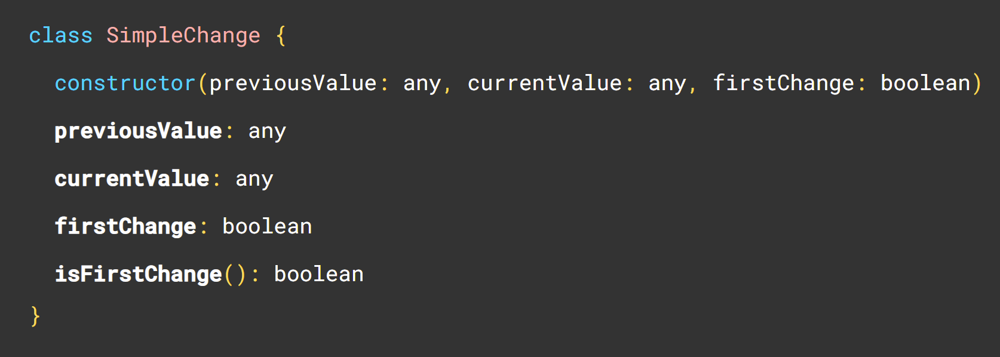

Not so commonly used. But if you post process your input properties or you need the previous value, this might be for you!
Called every time an input property changes
export class PlaygroundComponent implements OnChange {
playgrounds = input.required<Playground[]>();
ngOnChanges(changes: SimpleChanges) {
this.playgrounds().sort((a, b) => a.name.localeCompare(b.name))
}
}
This has become even more irrelevant since we got computed signals.